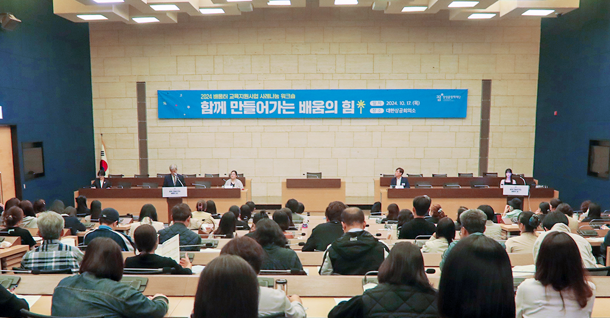

내일의 꿈을 향한 동행
삼성꿈장학재단이 함께 만들어갑니다.
Samsung Dream Scholarship Foundation
다양한 교육의 기회를
함께 나눕니다.
-
멘토링
꿈장학사업다양한 분야에 꿈과 가능성이 있는 청소년들을 멘토와 함께 선발하여 장학금을 지원하는 사업
자세히보기 -
배움터
교육지원사업지역적 · 사회경제적 이유로 교육지원이 부족한 아동, 청소년을 위하여 지역의 다양한 배움터들이 협력
자세히보기 -
리더육성
장학사업재단 출신 꿈장학생 가운데 성장이 돋보이고 학업역량 및 의지가 우수한 대학(원)생을 선발하여 지원
자세히보기 -
글로벌
장학사업역사적 상황으로 불가피하게 흩어진 한인후손과 개발도상국 현지 아동 · 청소년을 교육적으로 지원
자세히보기 -
특별사업
재단 장학생들에게 다양한 기회를 제공하고 사회전반에 교육복지 인식을 확산하고자,여러 기관들과 연계
자세히보기
장학재단 활동
-
 멘토링 꿈장학사업
멘토링 꿈장학사업
꺾이지 않는 도전정신으로 그려낸 70개의 꿈
삼성꿈장학재단은 매년 꿈장학 공모전을 통해 교육현장에 멘토링 꿈장학에 대한 이해를 넓히고, 우수한 멘토링 사례와 장학생들의 성장사례를 발굴하고 있다. 올해도 전국에서 많은 멘토 선생님과 장학생들이 참여하여 재단에서는 외부 전문가의 예심과 본심을 거쳐 멘토 수기 12편과 장학생 수기 및 영상, 웹툰, 캐릭터 디자인, 게임 등 총 70편이 최종 수상작으로 선정했다.
-
 배움터 교육지원사업
경험을 나누며 ‘배움’을 함께 만들어가다
삼성꿈장학재단은 매년 꿈장학 공모전을 통해 교육현장에 멘토링 꿈장학에 대한 이해를 넓히고, 우수한 멘토링 사례와 장학생들의 성장사례를 발굴하고 있다. 올해도 전국에서 많은 멘토 선생님과 장학생들이 참여하여 재단에서는 외부 전문가의 예심과 본심을 거쳐 멘토 수기 12편과 장학생 수기 및 영상, 웹툰, 캐릭터 디자인, 게임 등 총 70편이 최종 수상작으로 선정했다.
-
 리더육성 장학사업
리더육성 장학사업
배추 속까지 행복으로 꽉 채운 꿈아라들의 희망 한 포기
삼성꿈장학재단은 매년 꿈장학 공모전을 통해 교육현장에 멘토링 꿈장학에 대한 이해를 넓히고, 우수한 멘토링 사례와 장학생들의 성장사례를 발굴하고 있다. 올해도 전국에서 많은 멘토 선생님과 장학생들이 참여하여 재단에서는 외부 전문가의 예심과 본심을 거쳐 멘토 수기 12편과 장학생 수기 및 영상, 웹툰, 캐릭터 디자인, 게임 등 총 70편이 최종 수상작으로 선정했다.
-
 청소년치아교정지원사업/우수사례
청소년치아교정지원사업/우수사례
되찾은 환한 미소로 꿈을 향해 전진하다
삼성꿈장학재단은 매년 꿈장학 공모전을 통해 교육현장에 멘토링 꿈장학에 대한 이해를 넓히고, 우수한 멘토링 사례와 장학생들의 성장사례를 발굴하고 있다. 올해도 전국에서 많은 멘토 선생님과 장학생들이 참여하여 재단에서는 외부 전문가의 예심과 본심을 거쳐 멘토 수기 12편과 장학생 수기 및 영상, 웹툰, 캐릭터 디자인, 게임 등 총 70편이 최종 수상작으로 선정했다.
-
배움터 교육지원사업/우수사례
온·오프라인 ‘우리 동네’에서 다 같이(多가치) 성장하는 우리들 콩나물
삼성꿈장학재단은 매년 꿈장학 공모전을 통해 교육현장에 멘토링 꿈장학에 대한 이해를 넓히고, 우수한 멘토링 사례와 장학생들의 성장사례를 발굴하고 있다. 올해도 전국에서 많은 멘토 선생님과 장학생들이 참여하여 재단에서는 외부 전문가의 예심과 본심을 거쳐 멘토 수기 12편과 장학생 수기 및 영상, 웹툰, 캐릭터 디자인, 게임 등 총 70편이 최종 수상작으로 선정했다.